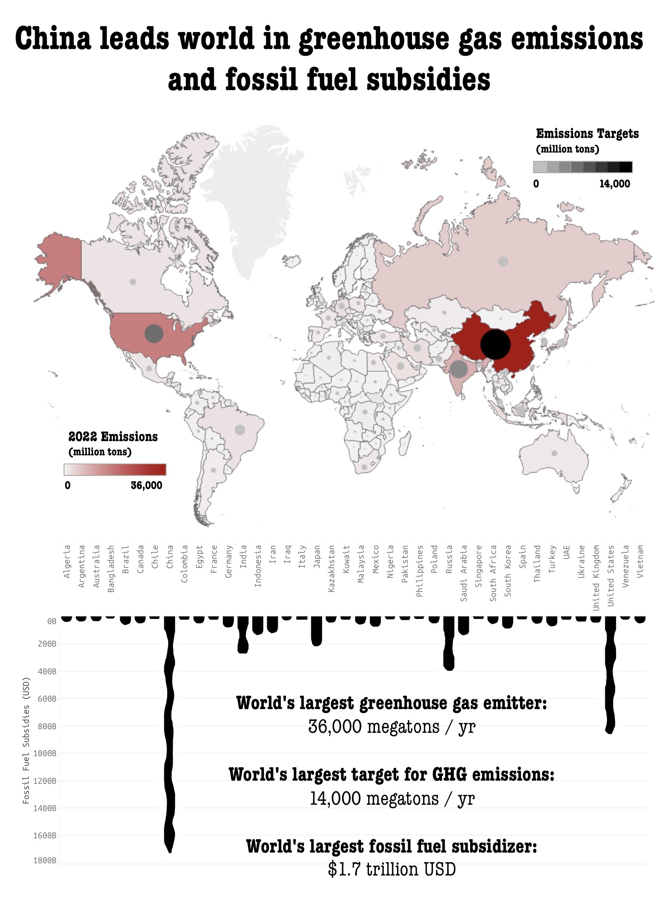

Proposition: China leads the world in fighting climate change
FOR the Proposition

Design Decisions and Rationale:
- My primary design decision was how to transform the emissions data to portray China as a smaller greenhouse gas emitter compared to other countries. I tried several combinations of [emissions in one year vs. total emissions since 1970], [raw emissions vs. emissions per capita vs. emissions per $ GDP], and [emissions vs. emission targets]. Since China is such a populous country, transforming per capita (using an outside IMF dataset) brings China from the top of the list to the middle. Using total emissions since 1970 also results in China's emissions decreasing, since its economy and therefore emissions have grown significantly since 1970. Personally, I think per capita is the most honest way to portray emissions, although agreggating over 50 years is definitely a leading tactic. 1.5
- I chose the net emissions color scale to make sure that China appeared green, while other countries (particularly "western" ones) appeared red, since for U.S. audiences (my general target audience), the color red is more associated with negative things, while green is associated with positive things, and particularly environmentalism. I tried many other color scales, many of which produced starker color differences (i.e. viridis), but I preferred the emotional impact of the green-to-red scale. I did also skew the colorbar slightly to make more countries appear red and contrast more with the green of China. For the emission targets, using both a grey-to-black colorscale and scaled dot sizes made the countries with the worst targets overwhelmingly stand out on two visual axes, minimizing China's relative position compared to other countries. The black-to-grey scale also felt less visually overwhelming than something like viridis, letting the green-to-red scale stand out well. These encodings feel pretty disingenuous because of how much they play on preconceptions and exaggerate differences that are not actually that large, but I didn't use any logarithmic scaling or other transformations. -1
- I chose to include the renewable & low-carbon tech investment, because it's a metric in which China is very far ahead of other countries. This isn't necessarily true per capita, so I made sure not to perform that transformation, but in terms of total investment, China is significantly ahead. I again chose to combine colorscale (again green for positivity) and bubble size to doubly emphasize China's dominance, and placed China's bubble at the bottom of the graphic to draw the viewer's eye from the title down to the rest of the graphic. To choose these metrics, I went through 13 of the 26 IMF datasets to look for countries that stood out in both positive and negative ways in different metrics (i.e. climate risk, carbon taxes, assets at risk, GDP losses/benefits, disaster frequency,etc.), and these were the metrics where one country stood out extremely clearly (For the first several hours, I was considering investigating countries in Africa, but unfortunately many are missing from some datasets or are less dramatically different from the rest of the world). Cherry-picking metrics like this and not normalizing for population was definitely disingenuous, but I think it's a common enough tactic that I felt comfortable using it. 0.5
- I chose to arrange the bubble plots around the map in arcs to mirror the way award logos often have laurels surrounding the main logo, with somewhat similar tapering towards the top. (This was brutal to arrange by hand in Adobe Illustrator, so it's not perfectly symmetric, but hopefully the effect comes across.) I wanted to lend a sense of achievement to the graphic to increase the positive impression of China's leadership in fighting climate change. I previously tried treemaps and bar charts, which don't suffer from humans' inaccurate area perception, but these plots just didn't have the same visual impact as the bubble plots, and took up space somewhat inefficiently. This was purely a psychological tactic with no use of actual data, so it feels purposefully deceptive. -1.5
- I tried to continue this "achievement" theme in my captions, using terms like "Ranks #1" and "China leads world." I generally stuck to positive portrayal (and a friendly font), but I did emphasize that China's emissions were lower than much of the U.S. and Europe, since those are the countries usually pitted against China in these types of comparisons. This was a similarly psychological tactic, but I think it's less effective and relatively objective. -0.5
AGAINST the Proposition

Design Decisions and Rationale:
- As discussed in the previous graphic, I chose my data transformations carefully--in this case using net emissions with no transformation to maximize China' much larger total emissions. Again, though, I strongly believe that per capita is the most honest framing. -1.5
- In this graphic, I chose the same emission target encoding to again emphasize the countries (in this case China) with the worst targets, but I switched from green-to-red color scaling for net emissions to white-to-red, because it felt less deceptive (while still using red's negative connotations), and I wanted to balance out having not adjusted for population. The white-to-red also makes most countries fade into the background, making China stand out more. In fact, using just red in this graphic helped emphasize the negative portrayal, and mixing in green would have diminished that effect. -0.5
- Similar to above, I cherry-picked the fossil fuel subsidies to find the most negative view of China in the dataset, and again didn't normalize for population. -0.5
- I attempted to stylize the fossil fuel subsidy bar chart to look like oil drips (similar to Simon Scarr's graphic), but unfortunately my artistic talents are limited. The bar chart also emphasized the massive difference between China and the next highest country (the U.S.), since length comparisons are easiest for viewers to make. -1
- My ability to gauge fonts is similarly limited, but I attempted to choose a less friendly and more eye-catching font for the graphic, to make it seem more aggressive and negative. I also used similar language to the previous graphic (i.e. "world's largest") to further emphasize the negative portrayal. -0.5
Final Reflection
The exploratory process necessary for my approach was quite extensive, but it helped me become much more adept at quickly filtering and visualizing different datasets and identifying trends or outliers. Performing transformations with the external IMF dataset also helped me improve my ability to reality-check my data transformations to catch mistakes in the formulas/filters. The actual design process was extremely difficult, because I knew in my head what I wanted the visualization to look like, but it took hours and hours to actually execute it. There are several small modifications I would like to make, but the amount of time it would take to rework the somewhat inflexible structures was prohibitive. I think this is a significant difficulty with narrative visualization, because Tableau and most other software are more tailored to straightforward visuals (perhaps rightly so).
I knew previously that data could be cherry-picked or transformed to support different arguments, but I didn't realize quite how large the changes could be. Moving China from the top polluter to the middle of the park is a substantial shift, but I've frequently both per capita and total [insert metric here] in the wild. I also previously hadn't considered the impact of different color encodings and adjusting their distributions (mainly because of my dedication to viridis). It makes me feel that there are very few persuasive choices that are not also deceptive--not necessarily misleading, but definitely purposefully deceptive. In fact, almost any type of persuasion has some aspect of deception, because there are very few claims that have absolutely no counter-evidence, and simply by not portraying these counter-arguments, the creator is practicing deception. Of course, it's impossible to avoid this, because design decisions do have to be made, and persuasive arguments need to be presented.